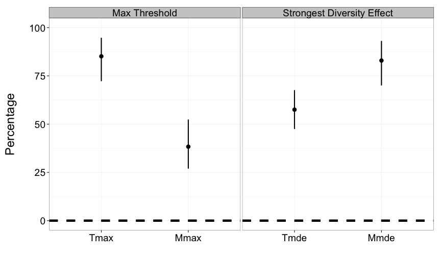

Griffin et al. 2008 Ecology
Measuring the effects of environmental change on multiple ecosystem functions
Jarrett Byrnes, Lars Gamfeldt, Forest Isbell, Jonathan Lefcheck, John Griffin, Andrew Hector, Bradley Cardinale, David Hooper, Laura Dee, J. Emmett Duffy
UMass Boston, University of Gothenburg, University of Minnesota, Virginia Institute of Marine Sciences, Swansea University, University of Zurich, University of Michigan, Western Washington University, University of California Santa Barbara, Virginia Institute of Marine Sciences
http://jebyrnes.github.io/seagrass-multifunc
Meta-analysis Trio: Diversity Affects Function
 |
 Balvanera et al. 2006 Eco. Let. |
But Are Only Two Species Needed?
 Cardinale et al. 2006 |
 Balvanera et al. 2006 Eco. Let. |

Duffy et al. 2003 Ecology Letters
How to Measure Multifunctionality
- Past Methods of 'Measuring' Multifunctionality
- At the Threshold of a Solution
- Future Explorations of BEMF
An Example: Duffy et al. 2003 Ecology Letters
Different Ways of Measuring Multifunctionality
- Overlap in Species Influencing Function
- Average Function
- Number of Functions Performing at a Threshold
Overlap in Species Influencing Function

Average of Standardized Functions
Number of Functions Performing at a Threshold

How to Measure Multifunctionality
- Past Methods of 'Measuring' Multifunctionality
- At the Threshold of a Solution
- Future Explorations of BEMF
Thresholds Seem Arbitrary
Slope Changes Systematically Across Thresholds
Slope Changes Systematically Across Thresholds
Slope Changes Systematically Across Thresholds
Slope Changes Systematically Across Thresholds
How to Measure Multifunctionality
- Past Methods of 'Measuring' Multifunctionality
- At the Threshold of a Solution
- Future Explorations of BEMF
Comparing Systems: Biodepth

Comparing Systems

Comparing Systems Behaviour
Assessing Generality of Metrics

How do We Measure Multifunctionality?
- Multifunctionality is a nuanced phenomenon
- Multiple methods in the literature address different aspects of multifunctionality
- Examining the relationship between diversity and # of Functions > a threshold at multiple thresholds provides new promising metrics
These methods not limited to biodiversity-ecosystem function research
Thanks to NCEAS & the BEF Working Group

R Multifunc Library: https://github.com/jebyrnes/multifunc
Pie Diversity Plots: https://github.com/jebyrnes/pieDivPlots